which git11 发布到GitHub Pages
Note
本节内容参考Creating your personal website using Quarto 和 Happy Git and GitHub for the useR。
本节内容基于macOS，在Windows系统下的具体操作存在较大差异。
11.1 注册GitHub账户
关于注册GitHub账户的详细指南，参考：https://happygitwithr.com/github-acct。
11.2 安装Git
在终端APP或者RStudio的终端面板输入：
如果返回”/usr/bin/git”，则表示Git已被安装到电脑上。如果返回”git: command not found”则表示Git未安装，则参阅《Happy Git and GitHub for the useR》进行安装。
可以通过运行下面的命令进一步查看Git的版本：
git --version会返回”git version 2.39.3 (Apple Git-145)“这样的信息。
11.3 配置Git
在终端（RStudio的终端面板或系统的终端）中逐个运行下面的命令，把其中的user.name和user.email替换成自己的用户名和GItHub账户的邮箱。这里的用户名不一定要和GitHub账户的的用户名一致，它会给本的Git仓库提供一个便于识别的标记。
git config --global user.name "dujunhong"
git config --global user.email "du.jh@icloud.com"或者，通过usethis包在R中进行配置：
library(usethis)
use_git_config(user.name = "djhcod", user.email = "du.jh@icloud.com")
Note
usethis is a package that facilitates interactive workflows for R project creation and development
然后通过在终端中运行git config –global –list查看配好的Git信息。或者通过usethis包的git_sitrep函数查看：
usethis::git_sitrep()11.4 获取GitHub个人访问令牌（personal access token，PAT）
PAT相当于GitHub账户的密码，所以通过PAT才能让本地的Git仓库和远程的GitHub个人仓库建立连接。需要为每台想连接GitHub的电脑配置一个专属PAT。可以通过https://github.com/settings/tokens进行配置，或者运行下面的代码直接进入配置页面：
在配置页面的”NOTE”中填写这个PAT的备注，建议写此PAT将要应用的设备的名称。在它的下方可以选择该PAT的到期时间：
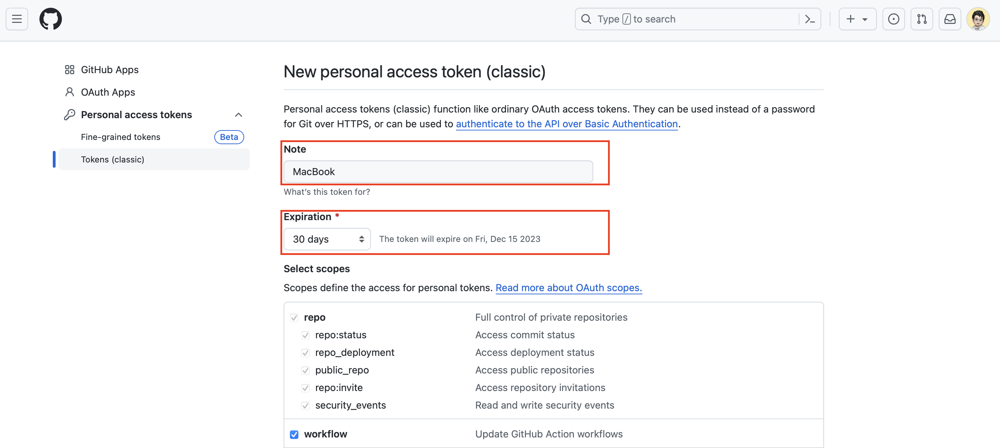
其他的设置保持默认，然后滑到页面最下方，点击”Generate token”：
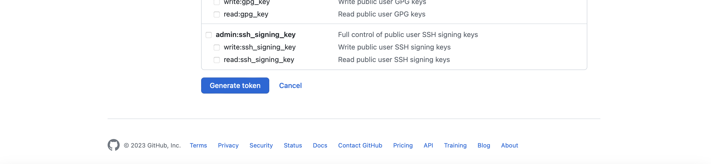
现在就会看到我们生成的PAT，记得把它即时复制下来，因为只要关闭了这个页面就无法再查看该密钥了：
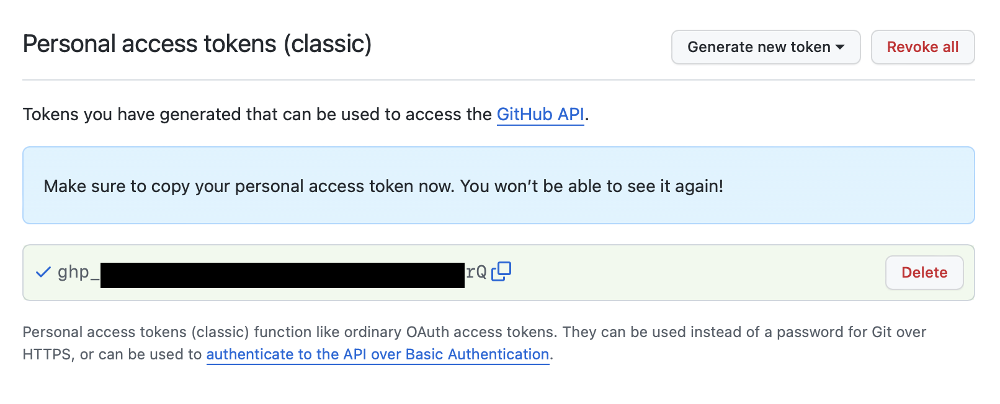
接下来，通过运行gitcreds包内的gitcreds_set函数来将PAT存储到本地：
gitcreds::gitcreds_set()运行该函数后会在Console中要求我们输入token，输入刚刚获取的PAT密钥点击回车即可。
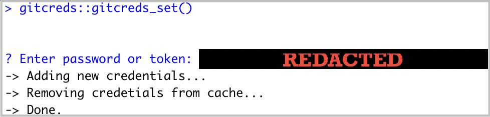
如果此前已经存储了PAT，运行这个函数后会出现如下的对话框，可以选择更新已到期的PAT也可以查看已经存储的PAT。
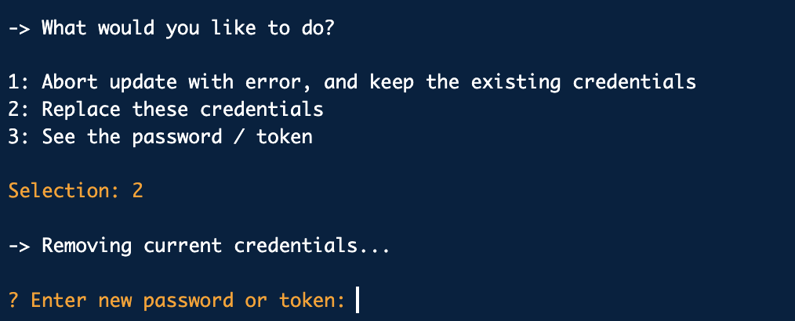
接下来我们再次运行git_sitrep函数，
usethis::git_sitrep()如果看到如下红框内的信息，证明已经成功连接到了GitHub：
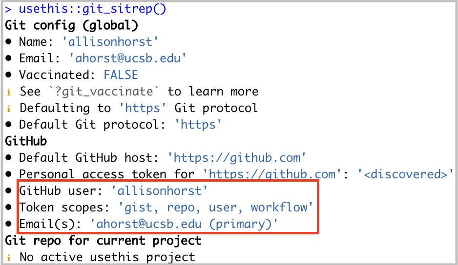
Note
更多关于PAT的获取指南，参考：https://ucsb-meds.github.io/meds-install-mac.html。
11.5 将R Project文件夹初始化为Git存储库
创建Quarto Books项目的内容参考 Chapter 10 。
Caution
项目文件夹的名称就是最终上传到GitHub库的名称，所以不要使用中文和空格，并起一个简单和有意义的名字。
对于Quarto Books或者Quarto Websites项目，为了方便项目管理和GitHub Pages的转换应该在项目的YAML配置文件中将编译文件的输出文件夹设置为”docs”（ Chapter 10 ）：
project:
type: book
output-dir: "book" 这样qmd文件编译后生成的HTML文件、脚本文件以及图片等文件都被存放在docs文件夹内。后面我们就可以指定GitHub Pages将这个docs文件夹作为构建网页的依据。
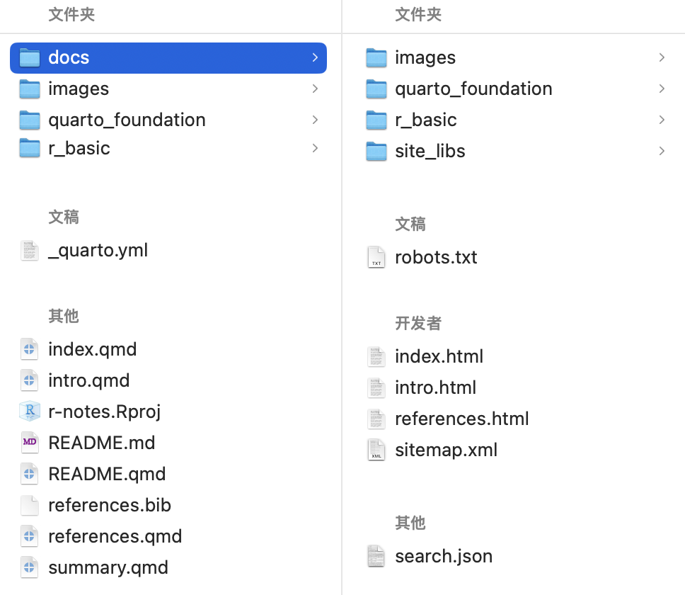
通过运行use_git函数以将R Project文件夹初始化为Git存储库：
usethis::use_git()Console中会提示已经将当前项目文件夹设置为了Git存储库。当系统询问是否可以提交任何未提交的文件时，请选择是，则会将所有文件进行上传。如果要求重新启动R，请选择是。
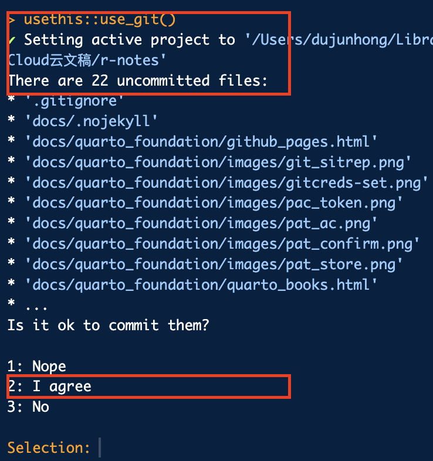
重启后，会看到RStudio的右下角窗格中出现了一个新的Git选项卡。里面列出了Git存储库，也就是我们的项目文件夹里面的所有文件，左侧用不同的颜色标注了文件的状态。
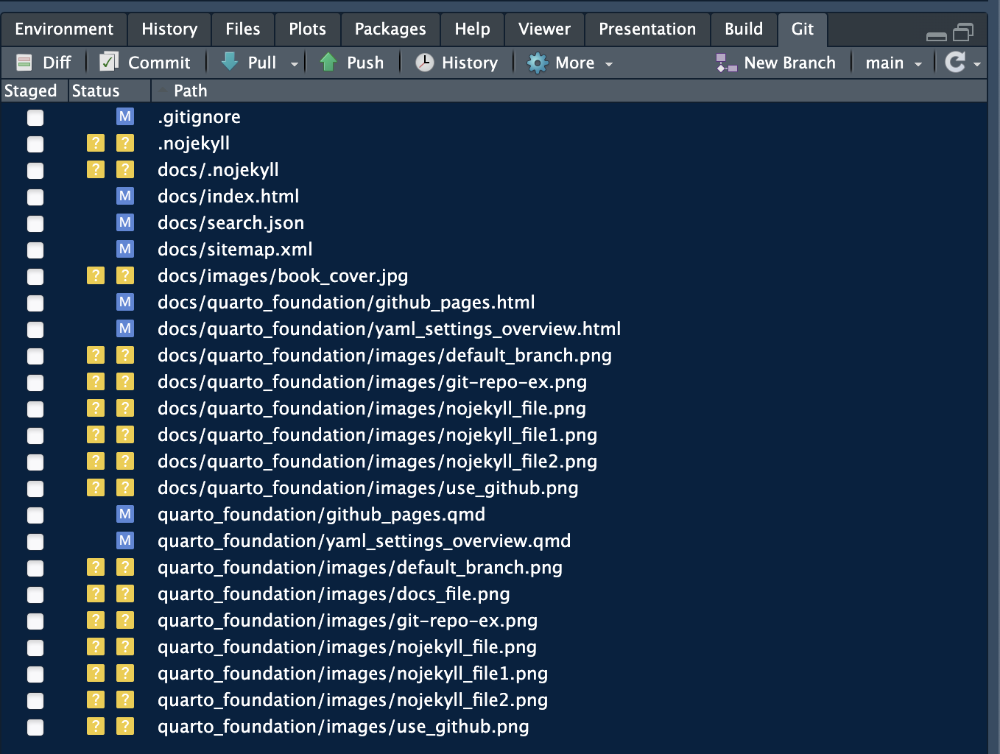
这个函数的原理是在项目文件夹中生成了一个名为”.git”的隐藏文件夹，从而将其认定为Git本地存储库。在Mac上通过快捷键Command+Shift+句号可以显示/隐藏这些隐藏文件。
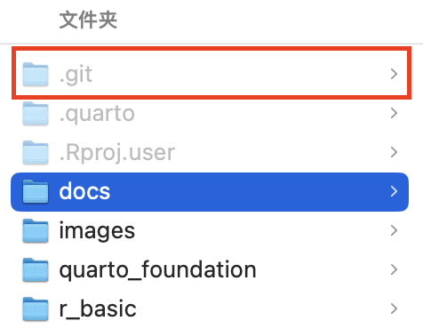
11.6 连接本地Git仓库和远程GitHub仓库
运行use_github函数后会首先创建一个项目同名的GitHub仓库，然后将所有本地Git库的文件上传到这个GitHub库中，完成后会自动打开浏览器并导航到建好的GitHub项目仓库。
usethis::use_github()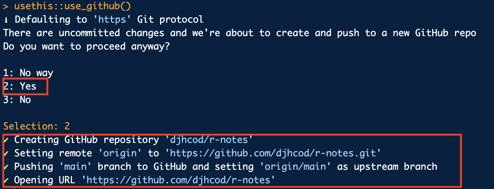
为了和GitHub统一，现在需要通过在RStusio的终端中运行下面的命令来检查一下当前项目的主分枝的名称是不是”main”。
git branch或者在RStudio中检查Git面板右上角的标签是不是”main”：
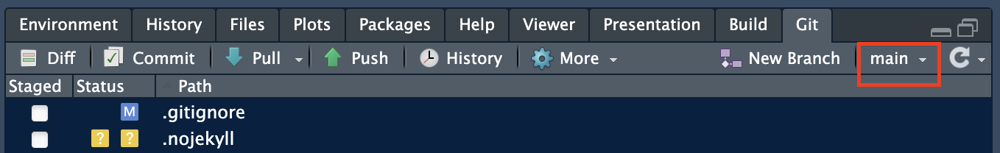
同时，GitHub项目主页左上角的默认分枝也应该是”main”：
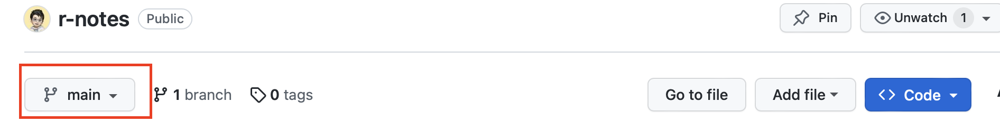
如果是，则可以直接进入下一步。否则，如果当前分支的名称为”master”，需要通过运行git_default_branch_rename函数将默认分枝的名称更新为”main”。
usethis::git_default_branch_rename(from = "master", to = "main")或者在终端中输入：
git config --global init.defaultBranch main然后通过git status再次检查默认分枝的名称，并回到GitHub项目主页刷新后查看默认分枝的名称是否已同步更改为”main”。
11.7 将本地静态HTML文件发布到GitHub Pages
首先，在项目根目录中创建一个名为.nojekyll的文件，该文件告诉GitHub Pages不要使用Jekyll（GitHub默认网页生成工具）对我们的文件进行额外处理。有两种方法可以做到这一点：
-
在RStudio终端中运行下面的命令：
touch .nojekyll该命令运行后不会有任何提示，但是在项目的根目录中会创建一个名为
.nojekyll的隐藏文件：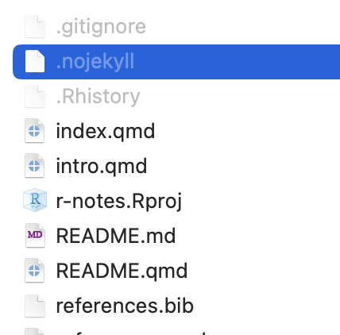
在RStudio中依次点击File>New File>Text File，然后点击保存，文件名写成”.nojekyll”即可。
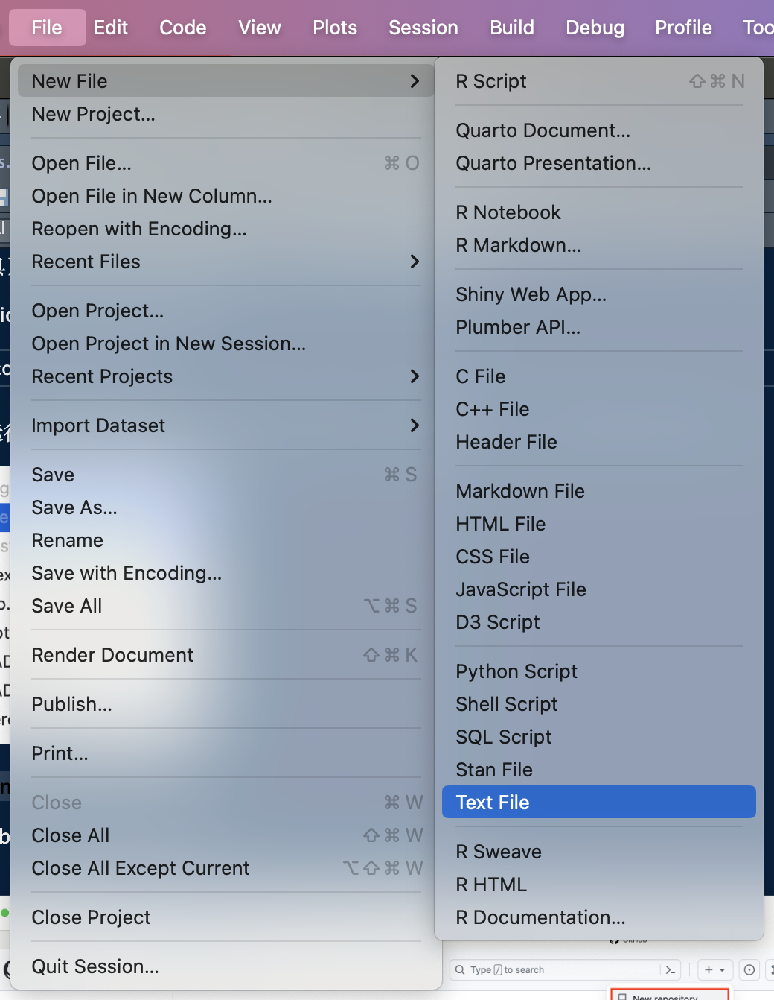
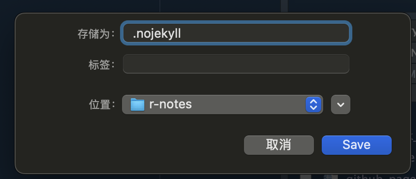
然后在Git面板中选中所有的文件（Git面板中列出的都是监测到有变动的文件）。这一操作等价于在终端输入：git add .。之后点击”Commit”（等价：git commit -m "my commit message"）。

这会打开commit说明窗口，填写右侧的commit说明后点击右下角的”Commit”就会上传所有的文件更改。

上传完成后关闭窗口，这时Git面板中不会有任何文件，是因为我们已经提交了所有更改。最后点击”Push”，就会把所有文件上传到GitHub仓库（等价：git push）。
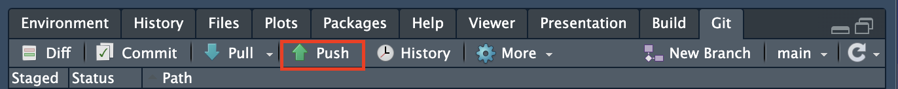
完成上述操作后，我们打开浏览器进入GitHub项目主页，点击设置按钮。

点击左侧导航栏的”Pages”选项，然后将GitHub Pages的创建来源选择为docs文件夹。

一段时间的等待后，我们就会在这个页面的上方看到已经生成的GitHub Pages的链接。

点击进去之后就可以看到我们的在线网页了。

Warning
不要更改docs文件夹内的任何内容。
不要更改index.qmd文件的名称。
12 .gitignore在 Git 中忽略文件和文件夹
如上面的@sec-将本地静态html文件发布到github-pages 所述，我们通过git add .命令将项目中的新文件或有变动的文件信息暂存到Git库，然后用git commit -m "my commit message"命令提交文件。其中git add后面跟的是需要提交的文件目录，这里我们用了"."，表示把Git文件夹内的所有文件变动信息都记录下来。当继续使用git commit命令时，每一个文件都会被添加。但是，我们有时候不想将某些特定的文件或文件夹上传，或者某些文件超出了GitHub允许的单个文件容量上限（100MB），这个时候我们就需要通过新建一个.gitignore隐藏文件来告诉Git忽略和不要追踪某些特定文件。
.gitignore文件是一个纯文本文件，里面列出我们要求Git忽略和不追踪的的文件的列表。在.gitignore中，可以通过提及特定文件或文件夹的名称或模式来告诉Git只忽略一个文件或一个文件夹。也可以用同样的方法告诉Git忽略多个文件或文件夹。
通常，将.gitignore文件放在仓库的根目录下。我们可以通过命令行工具来创建一个.gitignore文件。要在基于 Unix 的系统（如 macOS 或 Linux）上用命令行创建一个.gitignore文件，打开终端程序（如 macOS 上的 Terminal.app）。然后，用cd命令导航到包含项目的根文件夹（或者通过RStudio打开.Rproject项目文件，然后打开RStudio内的终端面板）。然后输入以下命令：
touch .gitignore这和 Section 11.7 一样，不会返回任何信息，但是会在项目根目录中生成一个文件名为.gitignore的隐藏文件：

我们用文本编辑工具或者RStudio打开这个文件。会发现里面已经有一些自动帮我们填好的文件列表：

在 Git 中忽略一个文件和文件夹
如果只忽略一个特定的文件，需要提供该文件在项目根目录下的完整路径。例如，如果想忽略位于根目录下的"text.txt"文件，可以将以下信息添加到.gitignore文件中：
/text.txt而如果想忽略一个位于根目录下的"test"文件夹中的"text.txt"文件，添加的信息是：
/test/text.txt或者：
test/text.txt忽略多个具有特定名称的文件和文件夹
如果想忽略整个项目内所有具有特定名称的文件，只需要写出该文件的文件名及其后缀。例如，如果想忽略任何文件名为"text.txt"的文件，可以在.gitignore中添加以下内容：
text.txt注意区别/text.txt。如果前面有/表示只忽略根目录下文件名为"text.txt"的文件。
如果要忽略某个文件夹，需要包括文件夹的位置及名称，并在最后加上斜线/：
test/这个命令将忽略项目中所有位置的名为"test"的文件夹。如前所述，如果我们写成下面这样：
test那么就会忽略项目中所有名称中含有"test"的文件和文件夹。
忽略任何以特定单词开头的文件或目录。例如，忽略所有名称以"img"开头的文件和文件夹。需要指定想忽略的名称，后面跟着*通配符选择器，像这样：
img*如果想忽略所有以特定文件扩展名结尾的文件，同样需要使用*通配符选择器，后面跟你想忽略的文件扩展名。例如，如果你想忽略所有以".md"文件扩展名结尾的markdown文件，你可以在你的.gitignore文件中添加以下内容：
*.md忽略以前提交的文件
当你创建一个新的仓库时，最好的做法是创建一个.gitignore文件，包含所有你想忽略的文件和不同的文件模式--在提交之前。Git 只能忽略尚未提交到仓库的未被追踪的文件。如果你过去已经提交了一个文件，但希望没有提交，会发生什么？比如你不小心提交了一个存储环境变量的".env"文件。你首先需要更新.gitignore文件以包括".env"文件：
# 给 .gitignore 添加 .env 文件
echo ".env" >> .gitignore现在，你需要告诉 Git 不要追踪这个文件，把它从索引中删除：
git rm --cached .envgit rm命令，连同--cached选项，从版本库中删除文件，但不删除实际的文件。这意味着该文件仍然在你的本地系统和工作目录中作为一个被忽略的文件。git status会显示该文件已不在版本库中，而输入ls命令会显示该文件存在于你的本地文件系统中。如果你想从版本库和你的本地系统中删除该文件，省略--cached选项。接下来，用git add命令将.gitignore添加到暂存区：
git add .gitignore最后，用git commit命令提交.gitignore文件：
git commit -m "update ignored files"发布GitHub Pages时常用的.gitignore文件配置
最后回到本节的实际问题中来。如果我们想要发布GitHub Pages并上传源代码，我们一般期望不要将编译时产生的缓存文件（如果在YAML中开启了cache: true）、数据文件（.RData/.RDS等）以及程序运行后的输出数据文件（.RData/.RDS等）上传。它们体积都较大，很有可能因为超出单个文件大小的限制而导致Push时报错。因此，一下列出了一个用于发布发布GitHub Pages时的典型.gitignore文件配置：
.Rproj.user
.Rhistory
.Rdata
.httr-oauth
.DS_Store
.quarto
/.quarto/
*_cache
data/
output/.Rproj.user、.Rhistory、.Rdata、.httr-oauth、.DS_Store、.quarto、/.quarto/都是项目的隐藏文件。-
*_cache是编译后的缓存文件，它们的后缀为"_cache"：
data/是放置代码运行所需的数据文件的文件夹。output/是存放代码运行后的输出数据的文件夹。